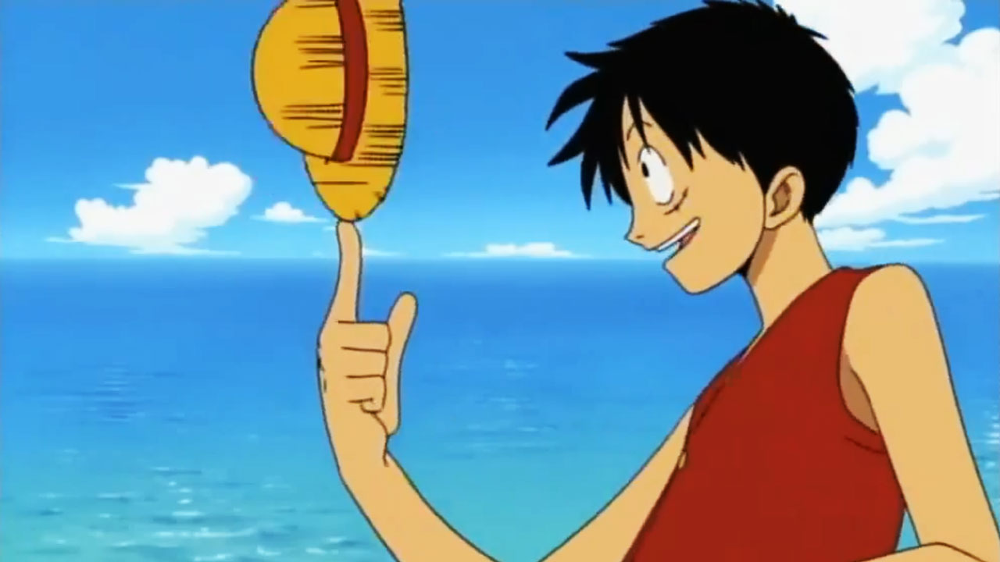
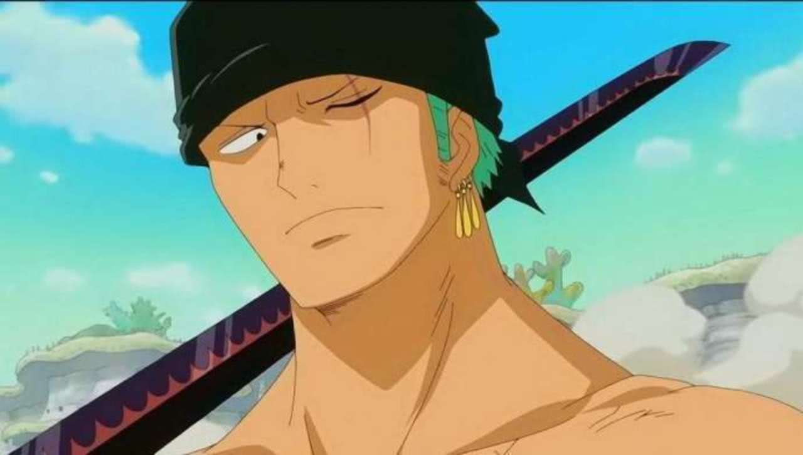
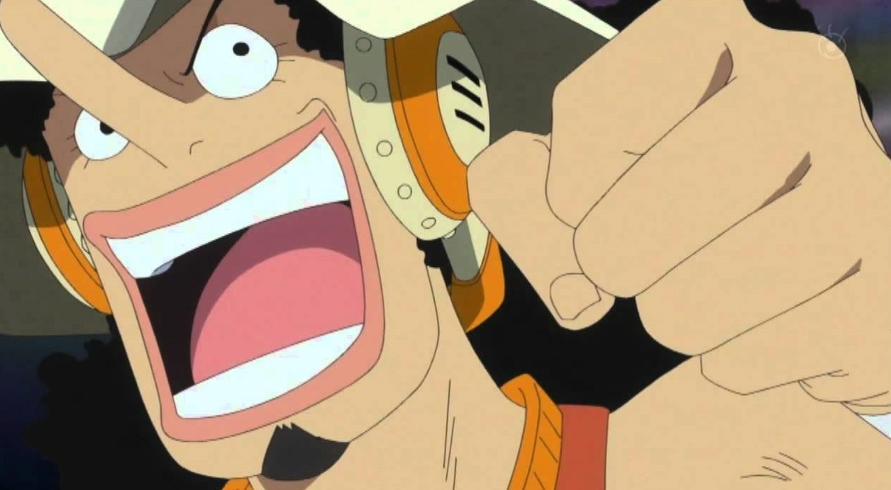
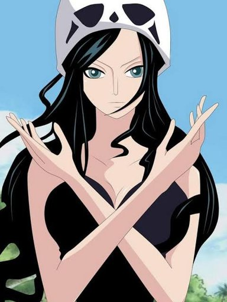
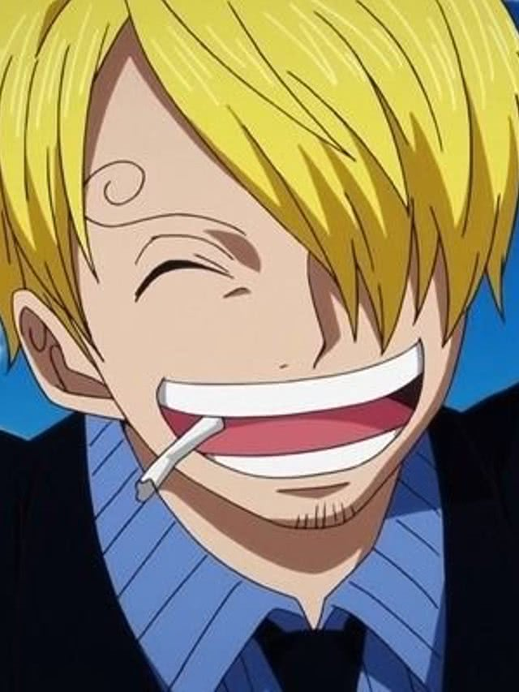
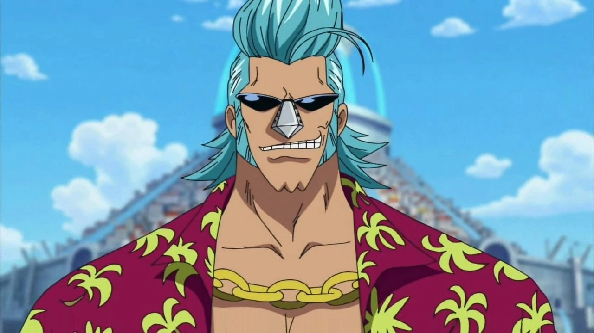
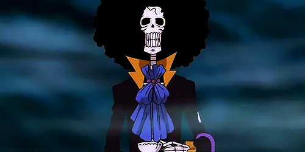
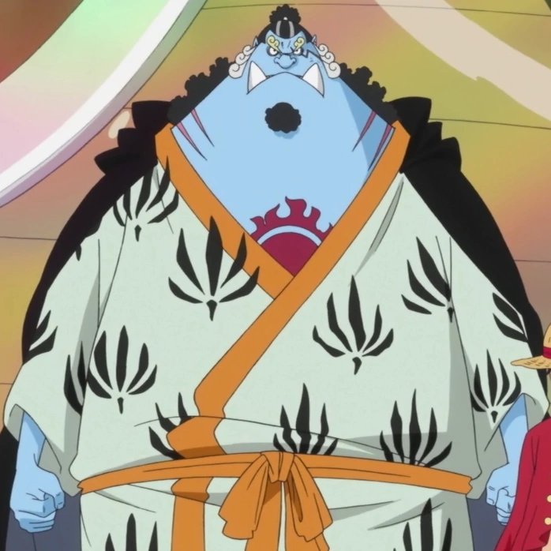

Capitão do bando Conhecido como Luffy do chapéu de palha, comeu a fruta gomu gomu no mi, que torna ele o homen borracha
Imediato de Luffy tambem conhecido como caçador de piratas, utiliza o estilo santoryu(empunhadura tripla)
Atirador do bando tambem conhecido como God Usopp utiliza a Kabuto uma especie de estilingue aprimorada
Historiadora do bando tambem conhecida como Criança demonio Comeu a fruta hana hana no mi(Fruta das flores)
Cozinheiro do bando Conhecido como Pernas Negras utiliza as pernas como a sua arma
É um ciborgue mecanico do bando Criador do Sunny goo , ele utiliza seu proprio corpo modidicado como arma
Musico do bando tambem conhecido como soul king,comeu a yomi yomi no mi(Fruta da ressureição)
Timoteiro do bando Conhecido como Cavaleiro do mar, Jinbe é um tritão que utiliza o estilo Karate-Homen-Peixe
